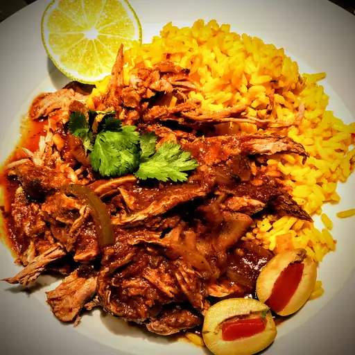

Cuban Ropa Vieja

Description
This ropa vieja is great served on tortillas or over rice. Add sour cream, cheese, and fresh cilantro on the side.
This dish is very short to prep (15 mins) but takes quite a while to cook! (4 hrs)
Ingredients
- 1 tablespoon vegetable oil
- 2 pounds beef flank steak
- 1 cup beef broth
- 1 (8 ounce) can tomato sauce
- 1 (6 ounce) can tomato paste
- 1 green bell pepper, seeded and sliced into strips
- 1 small onion, sliced
- 2 cloves garlic, chopped
- 1 teaspoon ground cumin
- 1 teaspoon chopped fresh cilantro
- 1 tablespoon olive oil
- 1 tablespoon white vinegar